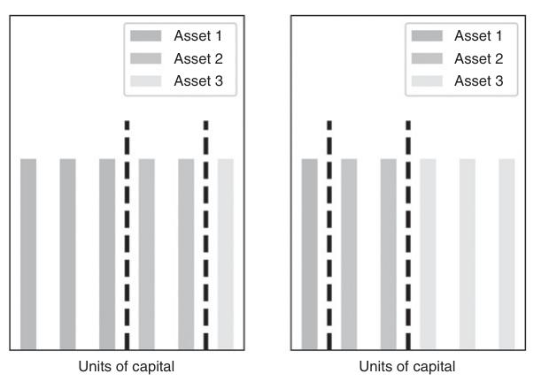

第五部分：高性能计算实践
暴力搜索与量子计算机
21.1 动机
离散数学在多个 ML 问题中自然出现，包括层次聚类、网格搜索、基于阈值的决策以及整数优化。有时，这些问题不存在已知的解析（闭合形式）解，甚至没有近似它的启发式方法，我们唯一的希望便是通过暴力搜索来寻找解。本章将研究一个对现代超级计算机而言难以处理的金融问题，如何被重新表述为整数优化问题。这种表述方式使其适合由量子计算机求解。通过这个例子，读者可以推断如何将自己特定的金融 ML 难解问题转化为量子暴力搜索问题。
21.2 组合优化
组合优化问题可以描述为这样一类问题：存在有限数量的可行解，这些解由有限个变量的离散值组合而成。随着可行组合数量的增长，穷举搜索变得不切实际。旅行商问题是一个典型的组合优化问题，已知其为 NP 难（Woeginger [2003]），即至少与非确定性多项式时间内可解的最难问题同等难度的问题类别。穷举搜索之所以不切实际，是因为标准计算机按顺序评估和存储可行解。但如果我们能够同时评估和存储所有可行解呢？这正是量子计算机的目标。标准计算机的比特每次只能采取两种可能状态之一（{0, 1}），而量子计算机依赖于量子比特（qubit），这是一种可以同时保持两种状态线性叠加的存储元素。从理论上讲，量子计算机能够借助
量子力学现象实现这一点。在某些实现中，量子比特可以支持同时沿两个方向流动的电流，从而提供所需的叠加态。正是这种线性叠加特性使量子计算机非常适合求解 NP 难组合优化问题。参见 Williams [2010] 关于量子计算机能力的综述。理解这一方法的最佳方式是通过一个具体例子。我们将展示一个受通用交易成本函数约束的动态组合优化问题，如何被表述为量子计算机可处理的组合优化问题。与 Garleanu and Pedersen [2012]，我们不假设收益服从IID高斯分布。这一问题对大型资产管理机构尤为重要，因为过度换手及执行缺口所带来的成本可能严重侵蚀其投资策略的盈利能力。
21.3 目标函数
考虑一组资产 \(X=\{x_i\},\ i=1,\ldots,N\)，其收益在每个时间期限上服从多元正态分布 \(h=1,\ldots,H\)，均值和方差随时间变化。我们假设收益服从多元正态分布、时间独立，但在时间维度上不满足同分布。我们将交易轨迹定义为一个 \(N\times H\) 矩阵 \(\omega\) ，用以确定分配给各 \(N\) 项资产在各 \(H\) 个时间期限上的资本比例。在某一特定时间期限 \(h=1,\ldots,H\)，我们有预测均值 \(\mu_h\)，预测方差 \(V_h\) 以及预测交易成本函数 \(\tau_h[\omega]\)。这意味着，给定一条交易轨迹 \(\omega\)，我们可以计算出预期投资收益向量 \(r\)，即
其中 \(\tau[\omega]\) 可采用任意函数形式。不失一般性，考虑如下形式：
\(\omega_n^*\) 是对资产 \(n\), \(n=1,\ldots,N\)的初始配置比例。以下实现默认 \(\omega^*=0\) ，除非提供了可选的初始配置 w0 。
\(\tau[\omega]\) 是一个 \(H\times1\) 交易成本向量。换言之，每项资产的交易成本等于资本配置变化量平方根之和，并由资产特定系数重新缩放 \(C_h=\{c_{n,h}\}_{n=1,\ldots,N}\) 会随时间段 \(h\) 变化。因此， \(C_h\) 是一个 \(N\times1\) 向量，决定各资产间的相对交易成本。
与……相关的夏普比率（第14章） \(r\) 可计算如下（\(\mu_h\) 已扣除无风险利率）
21.4 问题阐述
我们希望计算能求解如下问题的最优交易轨迹
该问题旨在求解全局动态最优解，与均值-方差优化器所得的静态最优解形成对比（参见第16章）。注意，非光滑交易成本已嵌入 \(r\)。与标准投资组合优化应用相比，本问题至少出于以下三个原因而非凸（二次）规划问题：（1）收益并非同分布，因为 \(\mu_h\) 和 \(V_h\) 会随 \(h\) 变化。（2）交易成本 \(\tau_h[\omega]\) 在零点不可微，且会随 \(h\) 变化。（3）目标函数 \(SR[r]\) 非凸。接下来，我们将展示如何在不利用目标函数任何解析性质的情况下求解（这也正体现了本方法的通用性）。
21.5 整数优化方法
该问题的通用性使其无法采用标准凸优化技术求解。我们的求解策略是将其离散化，使之适用于整数优化，进而借助量子计算技术求得最优解。
21.5.1 鸽巢划分
假设我们计算 \(K\) 单位资本可被分配至 \(N\) 个资产的方式数，其中假设 \(K>N\)。这等价于求以下方程非负整数解的个数 \(x_1+\cdots+x_N=K\)，其具有简洁的组合解 \(\binom{K+N-1}{N-1}\)。这与数论中经典的整数分拆问题颇为相似，Hardy 和 Ramanujan（以及后来的 Rademacher）已证明了该问题的渐近表达式（参见 Johansson [2012]）。在分拆问题中，顺序无关紧要，但对于我们手头的问题，顺序至关重要。

例如，若 \(K=6\) 和 \(N=3\)，分拆 \((1,2,3)\) 和 \((3,2,1)\) 必须被视为不同的分拆（显然 \((2,2,2)\) 无需进行全排列）。图 21.1 说明了在将 6 单位资本分配给 3 种不同资产时，顺序的重要性。这意味着我们必须考虑每个分拆的所有不同排列。尽管存在一个漂亮的组合数学方法来计算此类分配的数量，但随着规模增大，计算上仍可能相当耗时。 \(K\) 和 \(N\) 增大。不过，我们可以利用 Stirling 近似公式方便地得到估计值。
代码清单 21.1 提供了一种高效算法，用于生成所有分拆的集合，
其中 \(\mathbb{W}\) 为包含零在内的自然数（即非负整数）。
from itertools import combinations_with_replacement
#---------------------------------------
def pigeonHole(k,n):
# Pigeonhole problem (organize k objects in n slots)
for j in combinations_with_replacement(xrange(n),k):
r=[0]*n
for i in j:
r[i]+=1
yield r21.5.2 可行静态解
我们希望计算在任意给定投资期限下所有可行解的集合 \(h\)，记为 \(\Omega\)。考虑将 \(K\) 单位资本分配给 \(N\) 种资产的分拆集合， \(p^{K,N}\)。对于每个分拆 \(\{p_i\}_{i=1,\ldots,N}\in p^{K,N}\)，我们可以定义一个绝对权重向量，使得 \(|\omega_i|=\frac{1}{K}p_i\)，其中 \(\sum_{i=1}^{N}|\omega_i|=1\) （满仓约束）。该满仓（无杠杆）约束意味着每个权重可以为正也可以为负，因此对于每个绝对权重向量 \(\{|\omega_i|\}_{i=1,\ldots,N}\) ，我们可以生成 \(2^N\) 个（带符号的）权重向量。具体做法是将 \(\{|\omega_i|\}_{i=1,\ldots,N}\) 中各元素与以下集合的笛卡尔积中各元素相乘： \(\{-1,1\}\) 与 \(N\) 次重复。代码清单 21.2 展示了如何生成所有划分对应的 \(\Omega\) 权重向量集合，
import numpy as np
from itertools import product
#---------------------------------------
def getAllWeights(k,n):
#1) Generate partitions
parts,w,seen=pigeonHole(k,n),None,set()
#2) Go through partitions
for part_ in parts:
w_=np.array(part_)/float(k) # abs(weight) vector
for prod_ in product([-1,1],repeat=n):
# add sign
w_signed_=(w_*prod_).reshape(-1,1)
key=tuple(w_signed_.ravel())
if key in seen:
continue
seen.add(key)
if w is None:
w=w_signed_.copy()
else:
w=np.append(w,w_signed_,axis=1)
return w21.5.3 评估轨迹
给定所有向量的集合 \(\Omega\)，我们将所有可能轨迹的集合定义为 \(\Phi=\underbrace{\Omega\times\cdots\times\Omega}_{H}\) 的笛卡尔积，共 \(\Omega\) 与 \(H\) 次重复。然后，对每条轨迹可以计算其交易成本与 \(SR\)，并在 \(\Phi\)中选出性能最优的轨迹。代码清单 21.3 实现了该功能。对象 params 是一个字典列表，包含 \(C\), \(\mu\), \(V\).
import numpy as np
from itertools import product
#---------------------------------------
def evalTCosts(w,params,w0=None):
# Compute t-costs of a particular trajectory
tcost=np.zeros(w.shape[1])
w_=np.zeros(w.shape[0]) if w0 is None else np.asarray(w0).reshape(-1)
for i in range(tcost.shape[0]):
c_=params[i]['c']
tcost[i]=(c_*abs(w[:,i]-w_)**.5).sum()
w_=w[:,i].copy()
return tcost
#---------------------------------------
def evalSR(params,w,tcost):
# Evaluate SR over multiple horizons
mean,cov=0,0
for h in range(w.shape[1]):
params_=params[h]
mean+=np.dot(w[:,h].T,params_['mean'])[0]-tcost[h]
cov+=np.dot(w[:,h].T,np.dot(params_['cov'],w[:,h]))
sr=mean/cov**.5
return sr
#---------------------------------------
def dynOptPort(params,k=None,w0=None):
# Dynamic optimal portfolio
#1) Generate partitions
if k is None:
k=params[0]['mean'].shape[0]
n=params[0]['mean'].shape[0]
w_all,sr=getAllWeights(k,n),None
#2) Generate trajectories as cartesian products
for prod_ in product(w_all.T,repeat=len(params)):
w_=np.array(prod_).T # concatenate product into a trajectory
tcost_=evalTCosts(w_,params,w0=w0)
sr_=evalSR(params,w_,tcost_) # evaluate trajectory
if sr is None or sr<sr_:
# store trajectory if better
sr,w=sr_,w_.copy()
return w注意，该流程无需依赖凸优化即可选出全局最优轨迹。即使协方差矩阵病态、交易成本函数不光滑等情形下，同样能找到解。为此付出的代价是，计算该解极为耗时。事实上，遍历所有轨迹与旅行商问题类似。
数字计算机不适于求解此类 NP-完全或 NP-困难问题；然而，量子计算机借助线性叠加原理，能够同时评估多个解。本章所呈现的方法为 Rosenberg 等人的工作奠定了基础。 [2016]该工作利用量子退火器求解了最优交易轨迹问题。同样的逻辑可应用于涉及路径依赖的众多金融问题，例如交易轨迹。难以处理的 ML 算法可以被离散化并转化为暴力搜索，专门供量子计算机执行。
21.6 数值示例
以下我们以数字计算机为例，说明如何在实践中找到全局最优解。量子计算机可以同时评估所有轨迹，而数字计算机则是逐一顺序评估。
21.6.1 随机矩阵
代码清单 21.4 返回一个具有已知秩的高斯随机矩阵，在许多应用场景中十分有用（详见练习题）。下次需要执行多元蒙特卡洛实验或情景分析时，不妨参考此代码。
import numpy as np
#---------------------------------------
def rndMatWithRank(nSamples,nCols,rank,sigma=0,homNoise=True):
# Produce random matrix X with given rank
rng=np.random.RandomState()
U,_,_=np.linalg.svd(rng.randn(nCols,nCols))
x=np.dot(rng.randn(nSamples,rank),U[:,:rank].T)
if homNoise:
x+=sigma*rng.randn(nSamples,nCols) # Adding homoscedastic noise
else:
sigmas=sigma*(rng.rand(nCols)+.5) # Adding heteroscedastic noise
x+=rng.randn(nSamples,nCols)*sigmas
return x代码清单 21.5 生成 \(H\) 均值向量、协方差矩阵和交易成本因子， \(C\), \(\mu\), \(V\)。这些变量存储在一个 params 列表中。
import numpy as np
#---------------------------------------
def genMean(size):
# Generate a random vector of means
rMean=np.random.normal(size=(size,1))
return rMean
#---------------------------------------
#1) Parameters
size,horizon=3,2
params=[]
for h in range(horizon):
x=rndMatWithRank(1000,3,3,0.)
mean_,cov_=genMean(size),np.cov(x,rowvar=False)
c_=np.random.uniform(size=cov_.shape[0])*np.diag(cov_)**.5
params.append({'mean':mean_,'cov':cov_,'c':c_})21.6.2 静态解
代码清单 21.6 计算局部（静态）最优轨迹所对应的绩效表现。
import numpy as np
#---------------------------------------
def statOptPortf(cov,a):
# Static optimal portfolio
# Solution to the "unconstrained" portfolio optimization problem
cov_inv=np.linalg.inv(cov)
w=np.dot(cov_inv,a)
w/=np.dot(np.dot(a.T,cov_inv),a) # np.dot(w.T,a)==1
w/=abs(w).sum() # re-scale for full investment
return w
#---------------------------------------
#2) Static optimal portfolios
w_stat=None
for params_ in params:
w_=statOptPortf(cov=params_['cov'],a=params_['mean'])
if w_stat is None:
w_stat=w_.copy()
else:
w_stat=np.append(w_stat,w_,axis=1)
tcost_stat=evalTCosts(w_stat,params)
sr_stat=evalSR(params,w_stat,tcost_stat)
print 'static SR:',sr_stat21.6.3 动态解
代码清单 21.7 运用本章所介绍的各函数，计算全局动态最优轨迹对应的绩效表现。
import numpy as np
#---------------------------------------
#3) Dynamic optimal portfolios
w_dyn=dynOptPort(params)
tcost_dyn=evalTCosts(w_dyn,params)
sr_dyn=evalSR(params,w_dyn,tcost_dyn)
print 'dynamic SR:',sr_dyn参考文献
- Garleanu, N. and L. Pedersen (2012): “Dynamic trading with predictable returns and transaction costs.” Journal of Finance, Vol. 68, No. 6, pp. 2309–2340.
- Johansson, F. (2012): “Efficient implementation of the Hardy-Ramanujan-Rademacher formula,” LMS Journal of Computation and Mathematics, Vol. 15, pp. 341–359.
- Rosenberg, G., P. Haghnegahdar, P. Goddard, P. Carr, K. Wu, and M. López de Prado (2016): “Solving the optimal trading trajectory problem using a quantum annealer.” IEEE Journal of Selected Topics in Signal Processing, Vol. 10, No. 6 (September), pp. 1053–1060.
- Williams, C. (2010): Explorations in Quantum Computing, 2nd ed. Springer.
- Woeginger, G. (2003): “Exact algorithms for NP-hard problems: A survey.” In Junger, M., G. Reinelt, and G. Rinaldi: Combinatorial Optimization—Eureka, You Shrink! Lecture notes in computer science, Vol. 2570, Springer, pp. 185–207.